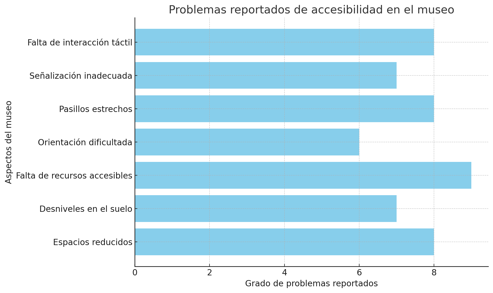
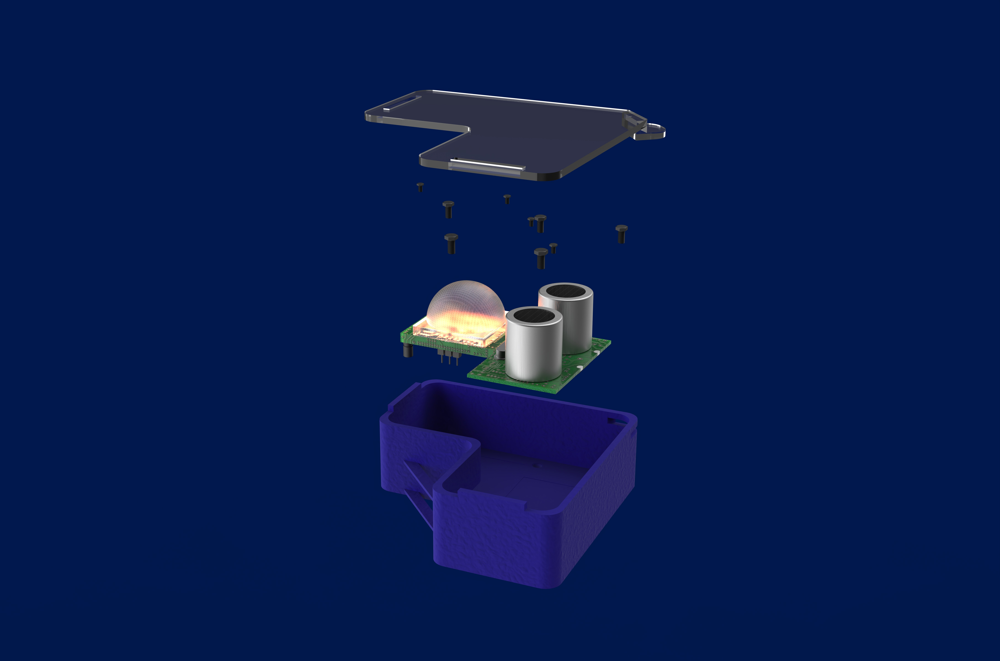
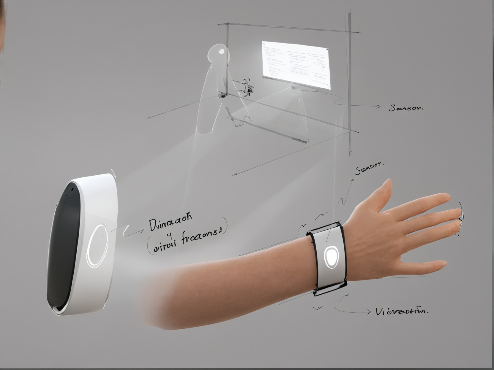

Contexto y Empatía

El 80% de las obras de arte en museos son visuales. Esto genera una marginación invisible pero severa para las personas con discapacidad visual. Fuimos al Museo Nacional de Arte (MUNAL) para entender esta brecha contextual desde la raíz.

El Desafío Constante
Tras nuestra inmersión e investigación empática (colaborando estrechamente con usuarios reales como Muñoz), determinamos que el reto principal era orientar y advertir sin ser intrusivos ni depender del espectro visual normativo de los visitantes primarios.


¿Cómo podríamos hacer que la prevención frente al acervo de arte sea inmersiva y accesible, sin desentonar con el silencio curatorial del espacio?
Sintetizando Inclusión


A través de un arduo proceso iterativo mapeado en la ejecución del doble diamante, desarrollamos el Sistema de Advertencia Multisensorial (SAM). Este módulo permite una navegación segura y establece una conexión táctil y audiológica con el entorno, expandiendo las dimensiones de la experiencia estética a receptores que históricamente se encontraban alienados.
Impacto y Recepción

Este rediseño universal probó que atender un sector al extremo del espectro visual, termina enriqueciendo y validando toda la exposición somática para todos los visitantes normativos por igual.
Visión a Futuro y Siguientes Pasos
Estandarización de patrones modulares: Buscamos empaquetar el sistema SAM de forma paramétrica para que sea fácilmente replicable en infraestructuras patrimoniales fuera del casco central de México.